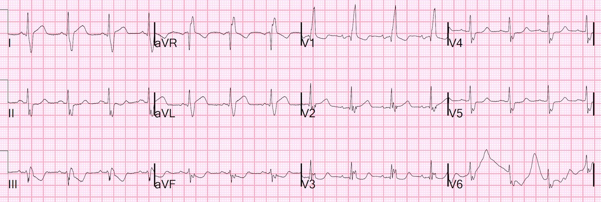
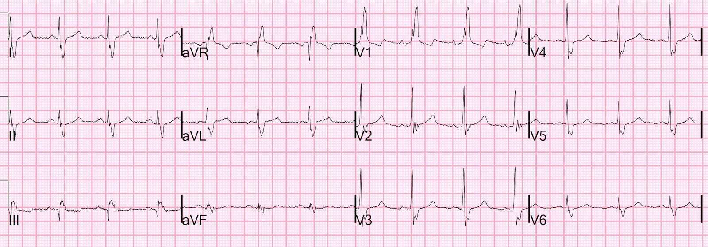
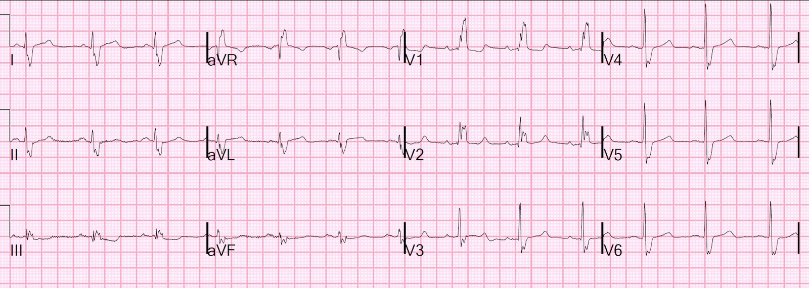
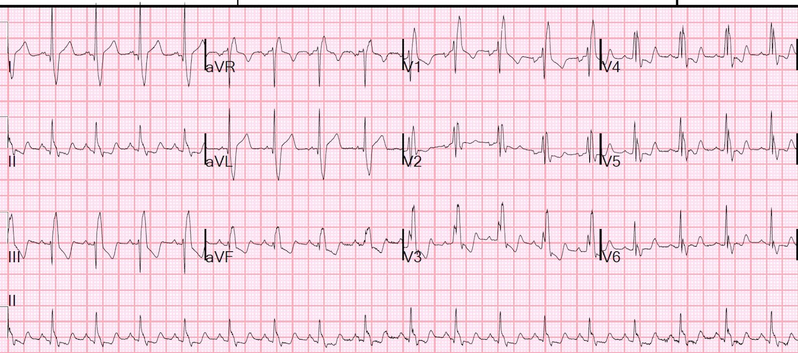
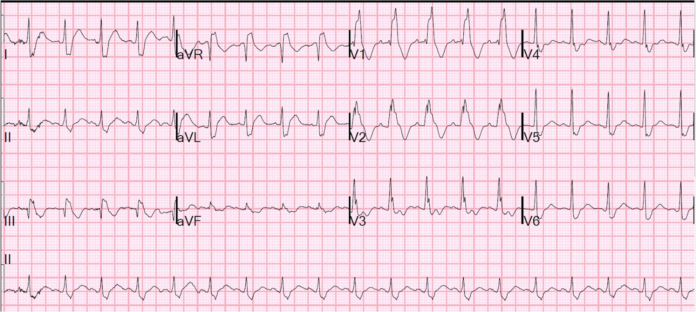
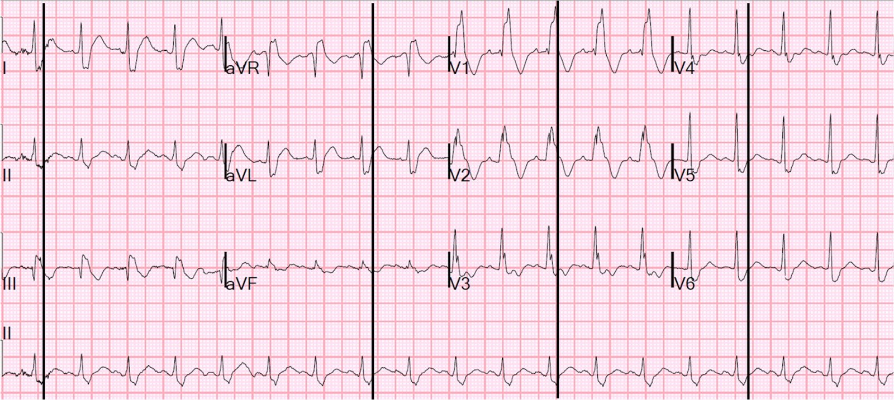
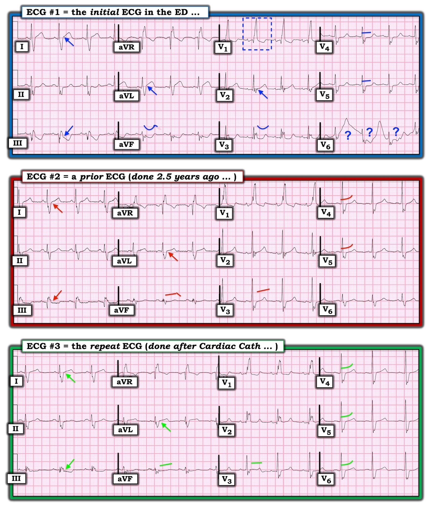

11/04/2022 — RBBB kèm ST chênh lên ở I và aVL. Chụp mạch vành có cho bạn biết điện tâm đồ này có phải là nhồi máu cơ tim do tắc (OMI) hay không?
Bản dịch tiếng Việt của bài "RBBB with STE in I and aVL. Will the angiogram tell you if this ECG represents Occlusion MI or not?" – Dr. Smith’s ECG Blog. Giữ nguyên toàn bộ 8 hình ảnh của bản gốc.
Một bệnh nhân nam trung niên có tiền sử STEMI và đã đặt stent đến viện vì đau ngực một giờ.
Đây là điện tâm đồ của bệnh nhân tại khoa cấp cứu (ED):


Bạn nghĩ gì?
Phân tích: Nhịp xoang với RBBB. Có ST chênh lên ở I và aVL, ngược hướng (discordant) với sóng S rộng (sóng S rộng ở các chuyển đạo bên là một đặc điểm của RBBB). Cũng có một ít ST chênh xuống ở chuyển đạo V3 (gợi ý OMI dưới-sau). Không có sóng R’ ở V2, vì vậy không nên chờ đợi thấy ST chênh xuống và sóng T đảo ngược ngược hướng điển hình vẫn thường gặp ở V2. Tuy nhiên, V3 có sóng R’ và có ST chênh xuống, nhưng sóng T lại dương đồng hướng, điều này bất thường.
Lẽ ra ST chênh lên không bao giờ có sẵn ở điện tâm đồ nền trong RBBB. Tôi nói “lẽ ra” vì điều này không hoàn toàn đúng. Nhiều trường hợp RBBB có một mức ST chênh lên nhỏ ở I và aVL, ngược hướng với sóng S rộng. Và ST chênh lên này cũng đi kèm ST chênh xuống soi gương ở các chuyển đạo dưới.
Xem các ví dụ về điều này ở cuối bài, kèm các link.
Có một điện tâm đồ cũ từ 2.5 năm trước:


Ở đây không có ST chênh lên.
Vì vậy, ST chênh lên trên điện tâm đồ đầu tiên phải được coi là OMI, vì nhiều lý do.
1) bệnh nhân có nguy cơ cao
2) triệu chứng điển hình (đau ngực cấp)
3) ST chênh lên đạt tiêu chuẩn STEMI
4) ST chênh lên là mới
Sóng T ở V3 ở đây cũng dương, nhưng
ngược hướng với một sóng S rộng (bình thường).
Ngược lại, sóng T dương ở V3 trên điện tâm đồ đầu tiên ở trên lại
đồng hướng với một sóng R’ (bất thường)
Kết cục:
Troponin độ nhạy cao lần đầu là 8 ng/L (bình thường).
Các bác sĩ cấp cứu đã kích hoạt phòng thông tim (cath lab) và bệnh nhân được chụp mạch vành:
Các động mạch vành lớn, có dòng chảy hơi chậm. Dòng chảy TIMI-2 ở LAD và nhánh chéo thứ nhất.
Mảng xơ vữa nhẹ, không có bệnh động mạch vành tắc nghẽn có ý nghĩa trên chụp mạch.
Ghi chú của khoa tim mạch:
Chụp mạch vành không cho thấy tổn thương thủ phạm rõ ràng để giải thích cơn đau ngực cấp của bệnh nhân. Không can thiệp gì. Đau ngực hết vào gần cuối thủ thuật. Truyền nitroglycerin được chỉnh liều theo mức kiểm soát đau và bắt đầu metoprolol 12.5 mg mỗi 6 giờ (Q6H). Bệnh nhân hết đau và ngừng dần truyền nitroglycerin. Với kết quả chụp mạch không tắc nghẽn, chẩn đoán phân biệt cho các triệu chứng của bệnh nhân bao gồm nhưng không giới hạn ở co thắt mạch, huyết khối tự tiêu sau nứt vỡ mảng xơ vữa, và viêm cơ tim hay viêm nội tâm mạc.
Troponin đỉnh là 16,123 ng/L (phù hợp với STEMI/OMI hoặc với viêm cơ tim)
Dòng chảy TIMI-3 ở tất cả các động mạch, không tìm thấy thủ phạm nào. Nhưng cơn đau hết vào gần cuối thủ thuật và troponin lần sau là 16,000!! Đây là MINOCA (nhồi máu cơ tim với động mạch vành không tắc nghẽn).
Bệnh nhân được điều trị nội khoa như ACS.
Chụp mạch vành KHÔNG phải là tiêu chuẩn vàng để xác định có tắc hay không vào thời điểm ghi điện tâm đồ. Trường hợp này sẽ được xếp loại là MINOCA
Điện tâm đồ sau chụp mạch vành:


Toàn bộ ST chênh lên đã hồi phục
Siêu âm tim chính thức:
Thất trái bình thường.
Phì đại thất trái đồng tâm.
Phân suất tống máu thất trái ước tính bình thường.
Có thể có rối loạn vận động thành khu trú ở vách liên thất đoạn xa – thành trước.
Họ đã chụp CT mạch vành để làm rõ hơn mọi mảng xơ vữa và để đánh giá vận động thành tốt hơn.
Có một vùng rối loạn vận động thành nhỏ ở thành trước đoạn giữa của thất trái.
Chi tiết chụp CT mạch vành:
LAD: LAD đoạn gần là một mạch lớn, đường kính tới 10 mm, dày thành lan tỏa không vôi hóa. Nhánh chéo thứ nhất khẩu kính nhỏ.
Có một nhánh chéo thứ hai lớn với dày thành lan rộng và hẹp nhẹ lỗ xuất phát (ostial). LAD đoạn xa là một mạch nhỏ.
Động mạch mũ: Mạch lớn ở đoạn gần, dày thành lan tỏa. Có hẹp khu trú nặng ở đoạn giữa động mạch mũ trong rãnh nhĩ thất (AV groove), đoạn xa thông tốt.
Nhánh bờ tù thứ nhất nổi rõ, nghi ngờ hẹp lỗ xuất phát.
Các nhánh sau bên thông tốt.
Động mạch vành phải: Mạch lớn ở đoạn gần, dày thành lan tỏa. Nhánh bờ nhọn và động mạch liên thất sau thông tốt.
Như vậy, CTCA cho thấy dày thành động mạch vành lan tỏa.
Nói cách khác, vì chụp mạch vành là một “phép chụp lòng mạch (lumenogram)”, nên chụp mạch vành không thể cho thấy mảng xơ vữa ngoài lòng mạch đang hiện diện. Chỉ CT mới thấy được các mảng xơ vữa này, một trong số đó được cho là nguồn gốc của huyết khối đã gây ra OMI rồi tự tan (biến mất!), chỉ để lại một ít dòng chảy chậm.
Siêu âm trong lòng mạch (IVUS) cũng được dùng để tìm mảng xơ vữa ngoài lòng mạch. Xem ca này: Wellens’ syndrome, no culprit, what happened? (Hội chứng Wellens, không có thủ phạm, chuyện gì đã xảy ra?)
Hai bệnh nhân có RBBB


Đây là một trường hợp dương tính giả với ST chênh lên ở I, aVL
Điện tâm đồ tiếp theo này lấy từ bài sau:
PseudoSTEMI and True ST elevation in Right Bundle Branch Block (RBBB) (Giả STEMI và ST chênh lên thật trong blốc nhánh phải). Đừng bỏ lỡ ca 4 ở cuối bài.


Đây là cùng điện tâm đồ đó, có kẻ các đường ở điểm kết thúc QRS:


Ca này cũng là một trường hợp ST chênh lên dương tính giả ở I và aVL.
Manh mối chính cho thấy đây không phải ACS là nhịp nhanh!!
Những điểm cần học:
1. Trong RBBB, ST chênh lên ở I và aVL, kèm ST chênh xuống soi gương ở các chuyển đạo dưới, có thể là hình ảnh nền/không do thiếu máu cục bộ! Tuy nhiên, bạn phải giả định tình huống xấu nhất cho tới khi chứng minh được điều ngược lại.
2. Chụp mạch vành không phải là trọng tài cuối cùng phân xử OMI. Trong ca này, đã có OMI, điện tâm đồ đã biểu hiện OMI, nhưng động mạch đã thông vào thời điểm chụp mạch và không tìm được thủ phạm. Điều đó chỉ có thể suy ra từ bệnh động mạch vành lan tỏa ngoài lòng mạch phát hiện trên CT
3. Điều cốt lõi: điện tâm đồ ở đầu bài quả thật thể hiện RBBB kèm nhồi máu cơ tim do tắc (Occlusion MI) ở I, aVL

===================================
BÌNH LUẬN CỦA TÔI, bởi KEN GRAUER, MD (11/4/2022):
===================================
Tôi thích ca này vì bài học quan trọng mà nó truyền tải: Thông tim không phải lúc nào cũng là trọng tài cuối cùng phân xử OMI cấp. Thay vào đó — đôi khi chúng ta cần ghép nối bệnh sử, các điện tâm đồ liên tiếp, troponin và các loại xét nghiệm khác (siêu âm tim, chụp CT mạch vành, v.v.) để giải thích OMI cấp dù thông tim cho thấy bệnh mạch vành không tắc nghẽn.
Tôi chọn tập trung bình luận vào một số dấu hiệu tinh tế-nhưng-có-thật trên 3 điện tâm đồ ghi được trong ca hôm nay (Hình 1). Tôi bắt đầu với điện tâm đồ đầu tiên ghi tại khoa cấp cứu.
- Điểm MẤU CHỐT về bệnh sử: Người đàn ông trung niên trong ca hôm nay có tiền sử STEMI trước đây đã đặt stent. Ông đến khoa cấp cứu vì đau ngực mới kéo dài ~1 giờ.
- Như Dr. Smith đã nêu — điện tâm đồ #1 cho thấy nhịp xoang với RBBB hoàn toàn. Đúng là chuyển đạo I và aVL đôi khi gây hiểu lầm, ở chỗ chúng có thể cho thấy một ít ST chênh lên ở bệnh nhân RBBB nhưng không nhồi máu. Dù vậy — tôi thấy mức ST chênh lên tại điểm J ở 2 chuyển đạo bên cao này là quá mức, so với mức ít hơn mà tôi quen thấy ở bệnh nhân RBBB không có nhồi máu cơ tim cấp (các mũi tên XANH ở chuyển đạo I, aVL trên điện tâm đồ #1).
- Thay đổi ST-T soi gương quá mức tương tự có ở chuyển đạo III và aVF.
- Bình thường với RBBB “đơn thuần” — có ít nhất một mức độ ST-T chênh xuống ở 2 chuyển đạo trước trở lên. Tôi thấy ít hơn “mức” ST-T chênh xuống mà tôi thường chờ đợi ở chuyển đạo V1 trên điện tâm đồ #1 — và nếu có gì thì lại là ST chênh lên nhẹ tại điểm J ở chuyển đạo V2 (mũi tên XANH ở chuyển đạo này). Sóng T dương đã thấy ở chuyển đạo V2 chắc chắn không phải là dấu hiệu chờ đợi với RBBB đơn thuần.
- Thấy một sóng Q khá lớn ở chuyển đạo V1. Có sóng q nhỏ-nhưng-hiện-diện (có thể có ý nghĩa) ở các chuyển đạo V2 và V3.
- Chuyển đạo V3 trên điện tâm đồ #1 cho thấy một ít ST chênh xuống dạng lõm (scooped).
- Chuyển đạo V4 và V5 cho thấy đoạn ST thẳng đuỗn rõ rệt, gợi ý có ST chênh xuống.
- Chuyển đạo V6 không đọc được — điều đáng tiếc vì có các dấu hiệu bất thường ở các chuyển đạo lân cận.
- BẠN có để ý sự phân mảnh (khía) rõ rệt của các phức bộ QRS ở nhiều chuyển đạo không?
- ĐIỀU CỐT LÕI về điện tâm đồ #1: Tôi không thể chắc chắn điều gì là “mới” hay “cũ” trên điện tâm đồ #1. Dù vậy — đây chắc chắn không phải là bản ghi RBBB đơn thuần. Sự phân mảnh rõ rệt cho chúng ta biết (cũng như tiền sử của bệnh nhân này) — rằng có bệnh mạch vành nền. Các dấu hiệu ST-T bất thường khác mô tả ở trên phải được coi là cấp tính cho tới khi chứng minh được điều ngược lại — và tôi cũng nghĩ bệnh nhân này có thể có bệnh nhiều nhánh mạch vành.


So sánh với bản ghi cũ (điện tâm đồ #2):
Khi cuối cùng tôi được xem bản ghi cũ của bệnh nhân hôm nay — các nghi ngờ nêu trên của tôi về điện tâm đồ #1 càng được củng cố.
- Các mũi tên ĐỎ ở chuyển đạo I, aVL và III trên điện tâm đồ #2 xác nhận rằng mức điểm J chênh lên hoặc chênh xuống quá mức ở các chuyển đạo này trên điện tâm đồ #1 quả thật là một dấu hiệu mới.
- Những khác biệt tinh tế-nhưng-có-thật cũng có ở từng chuyển đạo được đánh dấu. ST chênh xuống dạng lõm đã thấy ở chuyển đạo aVF và V3 trên điện tâm đồ #1 không có trên bản ghi cũ. Và đoạn ST trên điện tâm đồ #2 dốc lên nhẹ nhàng (các đường cong ĐỎ) so với đoạn thẳng đuỗn (đường XANH) ở chuyển đạo V4, V5 trên điện tâm đồ #1.
- Nhiều chuyển đạo phân mảnh đã có sẵn trên bản ghi cũ. Tuy nhiên, các sóng Q ở chuyển đạo trước thì không.
- ĐIỀU CỐT LÕI: Bản ghi cũ từ 2.5 năm trước (điện tâm đồ #2) cũng không phải là điện tâm đồ RBBB “đơn thuần” — vì đã có phân mảnh rõ rệt ở nhiều phức bộ QRS — và — sóng T ở chuyển đạo V2 đã dương sẵn. Nhưng nhiều bất thường ST-T tinh tế khác ghi nhận ở trên cho điện tâm đồ #1 quả thật là mới và phù hợp với giá trị troponin huyết thanh tăng rất cao.
SUY NGHĨ CỦA TÔI về điện tâm đồ ghi lại (điện tâm đồ #3):
Thêm một bằng chứng ủng hộ rằng các dấu hiệu điện tâm đồ mô tả ở trên cho điện tâm đồ #1 thật sự là mới và chỉ điểm thiếu máu cục bộ cấp — chính là việc điện tâm đồ sau thông tim gần như trở về hình ảnh của điện tâm đồ cũ ghi 2.5 năm trước đó. Như Dr. Smith đã nhấn mạnh — sự hồi phục các dấu hiệu thiếu máu cục bộ trên điện tâm đồ này không có gì bất ngờ, vì gần như chắc chắn đã có tái tưới máu tự phát cùng với việc hết đau ngực vào gần cuối thủ thuật thông tim.
- Thông điệp cần nhớ: So sánh cẩn thận điện tâm đồ cũ và các điện tâm đồ liên tiếp, đối chiếu với diễn biến lâm sàng, có thể mang lại hiểu biết rất sâu sắc — và, kết hợp với kết quả các xét nghiệm khác — có thể ủng hộ mạnh mẽ chẩn đoán giả định OMI cấp dù thông tim cho thấy động mạch vành không tắc nghẽn.